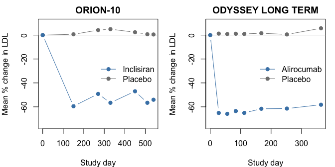

This package gives you data shaped like a real clinical trial, so you can fit that trial’s own analysis to it. Each dataset is modeled on a published trial and its statistical analysis plan: the same visits, the same covariates, and effects that match the published results.
Every subject is made up. The data is not affiliated with or endorsed by any trial’s sponsor.
Installation
You can install the development version of clinique from GitHub with:
# install.packages("pak")
pak::pak("edgararuiz/clinique")Available studies
Each study has its own function. There are three so far, all trials of drugs that lower LDL cholesterol. All are analyzed with a mixed model for repeated measures (MMRM), but each one teaches something different:
| Function | Trial | Drug | Subjects | Design | What it teaches |
|---|---|---|---|---|---|
simulate_orion10() |
ORION-10 | Inclisiran, twice a year | 1,561 | 1:1, 6 visits over 18 months | An effect that rises and falls with each dose |
simulate_orion11() |
ORION-11 | Inclisiran, twice a year | 1,617 | 1:1, 7 visits over 18 months | A sister trial of ORION-10 whose analysis plan adds a covariate and keeps Day 90 in the model |
simulate_odyssey_lt() |
ODYSSEY LONG TERM | Alirocumab, every two weeks | 2,341 | 2:1, 7 visits over 1 year | Adjusting for randomization strata, and weighting means by them |
The difference in dosing shows in the data. Inclisiran’s effect is strongest a few months after each dose and weaker just before the next. Alirocumab’s stays flat:

Example
Simulate ODYSSEY LONG TERM. Each row is one subject at one visit. The last four columns are the randomization strata, which the trial’s analysis plan adjusts for:
library(clinique)
set.seed(1)
ldl <- simulate_odyssey_lt(2341)
head(ldl)
#> # A tibble: 6 × 14
#> subject_id treatment age sex race visit day ldl_baseline ldl
#> <fct> <fct> <dbl> <fct> <fct> <ord> <dbl> <dbl> <dbl>
#> 1 001-0001 Placebo 62 Male White Week 4 28 85.0 94.1
#> 2 001-0001 Placebo 62 Male White Week 8 56 85.0 104.
#> 3 001-0001 Placebo 62 Male White Week 12 84 85.0 116.
#> 4 001-0001 Placebo 62 Male White Week 16 112 85.0 133.
#> 5 001-0001 Placebo 62 Male White Week 24 168 85.0 114.
#> 6 001-0001 Placebo 62 Male White Week 36 252 85.0 94.0
#> # ℹ 5 more variables: ldl_pct_change <dbl>, hefh <fct>, prior_mi_stroke <fct>,
#> # statin_intensity <fct>, region <fct>Fit the trial’s MMRM and compare the arms at Week 24, the primary endpoint:
fit <- mmrm::mmrm(
ldl_pct_change ~ treatment * visit +
hefh * visit +
prior_mi_stroke * visit +
statin_intensity * visit +
region * visit +
ldl_baseline * visit +
us(visit | subject_id),
data = ldl,
reml = TRUE,
method = "Satterthwaite"
)
means <- emmeans::emmeans(fit, ~ treatment | visit, weights = "proportional")
#> mmrm() registered as emmeans extension
diffs <- summary(emmeans::contrast(means, "revpairwise"))
diffs[diffs$visit == "Week 24", ]
#> contrast visit estimate SE df t.ratio p.value
#> Alirocumab - Placebo Week 24 -62.7 1.3 2332 -48.439 <0.0001
#>
#> Results are averaged over the levels of: hefh, prior_mi_stroke, statin_intensity, regionThe trial reported a difference of -62% (95% CI -64 to -59).
Learn more
Each study has an article that explains every number in the simulation, where it came from, and what was assumed:
- ORION-10:
vignette("orion10", package = "clinique"). - ORION-11:
vignette("orion11", package = "clinique"). - ODYSSEY LONG TERM:
vignette("odyssey-lt", package = "clinique").